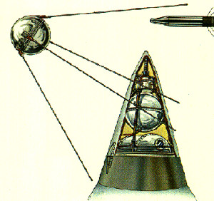
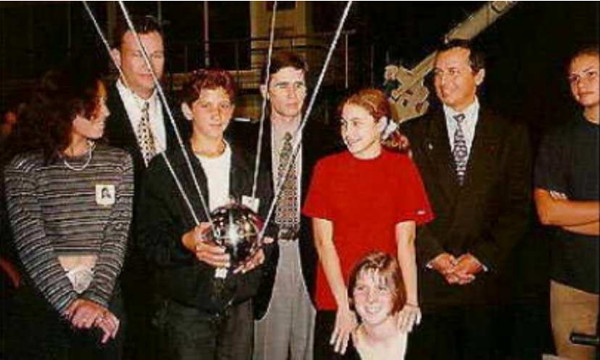
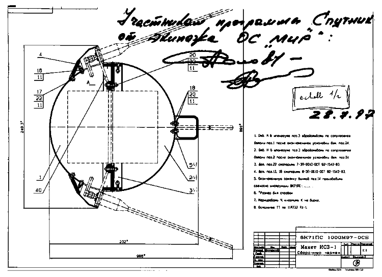
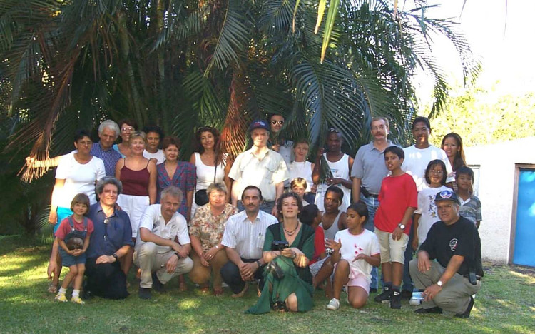
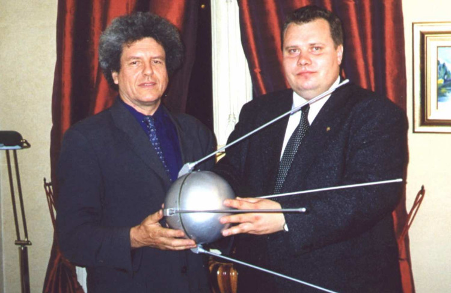

Le premier satellite artificiel du monde a été
lancé il y a 40 ans. En 1957, les sovietiques et les américains se livraient une battaiile d'estime dans la course à l'espace. Plusieurs étapes ont été remportées par les russes dont celle de la mise sur orbite du premier satellite artificiel du monde: Spoutnik.
40 ans plus tard, l'anniversaire passe presque inaperçu tant il semble que les russes ont abandonné propagande soviétique à l'ancienne.
Le 40e anniversaire de Spoutnik se
fête malgré tout avec le lancement d'un spoutnik du
même type avec un groupe de réunionnais. emmené apr
Guy Pignolet, un ancien ingénieur du CNES.
la Fédération Astronautique de Russie, en association avec l'Aéro-Club de France, a décidé de faire une animation mondiale autour du lancement de ce premier satellite en concevant et lançant un modèle réduit de Spoutnik-1 qui sera réalisé en coopération par des collégiens de Naltchik, dans la République Russe de Kabardine-Balkar et des collégiens Saint-Denis-de-la-Réunion.

Les enfants du Radio-Club du Collège Reydellet de Saint Denis sont en Russie
Le projet se trouve des parrains tout au long de l'année 97 en présentant le projet par exemple au salon du Bourget. Les élèves du Centre d'Education Polytechnique de Naltchik se chargent de la partie mechanique du satellite tandis que les élèves du Radio-Club du Collège Reydellet de Saint-Denis-de-la-Réunion est en charge de l'électronique (dont la fameuse balise qui fait Bip ! Bip!)

Plan de la maquette du satellite signée
le satellite Spoutnik 40 Ans décolle du cosmodrome de Baïkonour à bord d'un vaisseau de transport Progress le 5 octobre 1997 soit 40 ans et un jour après le lancement du Spoutnik-1. Le vaisseau progress s'arrime à la station MIR le 8 octobre. Il sera lancé dans l'espace le 3 novrembre 1997 par le cosmonaute Pavel Vinogradov. Ce dernier, de retour sur terre, viendra rendre visite à ceux qui ont fabriqué le petit satellite.

Pavel Vinogradov en visite à la Réunion pour rencontrer les enfants du Collège Reydellet
Le site du projet a souvent déménagé et les pages qui en parlaient ont toutes disparues.
Le site de nouvelles Protel news nous fait un petit compte rendu de
l'envoi de ce petit satellite depuis la station MIR le 3
novembre. Le web de Jussieu a aussi couvert l'évènement
avec une approche plus scientifique et même le centre spacial européen en Belgique y consacrait une page. Mais aujourd'hui seul subsiste le site du projet publié pour la première fois sur Océanes et maintenant hébergé par un site de radios amateurs de la Réunion.
Merci à Guy Pignolet de Sainte-Rose, pour cette aventure.

Guy Pignolet et Viktor Kurilov, directeur de la Fédération
Astronautique de Russie, porteurs du projet